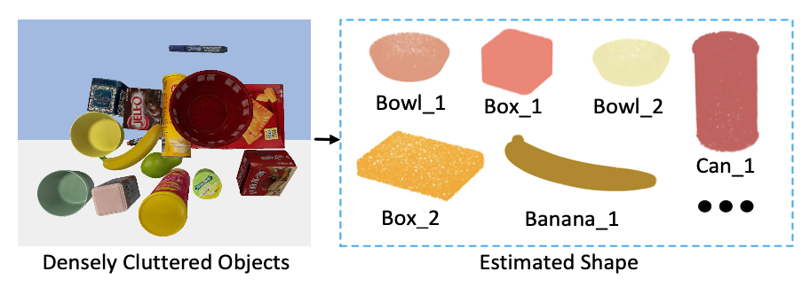

|
Zhenyu Wu
Zhenyu Wu received his B.Eng. degree from the Beijing University of Posts and Telecommunications (BUPT) in 2021. He is currently a graduate student at the School of Automation, Beijing University of Posts and Telecommunications, China. His research interests include robotic vision, intelligent robotics, and remote sensing image object detection.
He serves as a regular reviewer member for Pattern Recognition Letters, ICME and ICIP.
Email /
Github
|
|
|
News
2023-02: One paper on remote sensing image object detection is accepted to PRL.
2023-01: One paper on object shape estimation is accepted to ICRA 2023.
2022-06: One paper on robotic exploration are accepted to IROS 2022.
2022-03: One paper on road segmentation are accepted to ICME 2022.
|
|

|
Category-level Shape Estimation for Densely Cluttered Objects
Zhenyu Wu, Ziwei Wang, Jiwen Lu, Haibin Yan
IEEE International Conference on Robotics and Automation (ICRA), 2023.
[PDF]
[Code]
We propose a category-level shape estimation method for densely cluttered objects, which addresses the challenges of large object segmentation errors and inaccurate shape recovery on unseen instances.
|

|
Smart Explorer: Recognizing Objects in Dense Clutter via Interactive Exploration
Zhenyu Wu*, Ziwei Wang*, Zibu Wei, Yi Wei, Haibin Yan
IEEE/RSJ International Conference on Intelligent Robots and Systems (IROS), 2022.
[PDF]
[Demo]
[Code]
We propose an interactive exploration framework called Smart Explorer for recognizing all objects in dense clutters.
|
|
Honors and Awards
2022 First Class School Scholarship
|
|
Academic Services
Conference Reviewer: ICME 2022/2023, ICIP 2022/2023, VCIP 2022
Journal Reviewer: Pattern Recognition Letters
|
|
{kind=link}